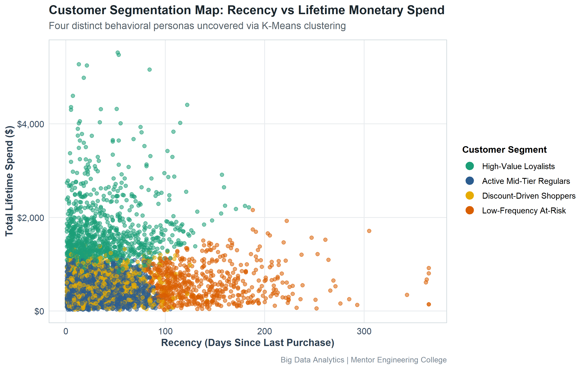
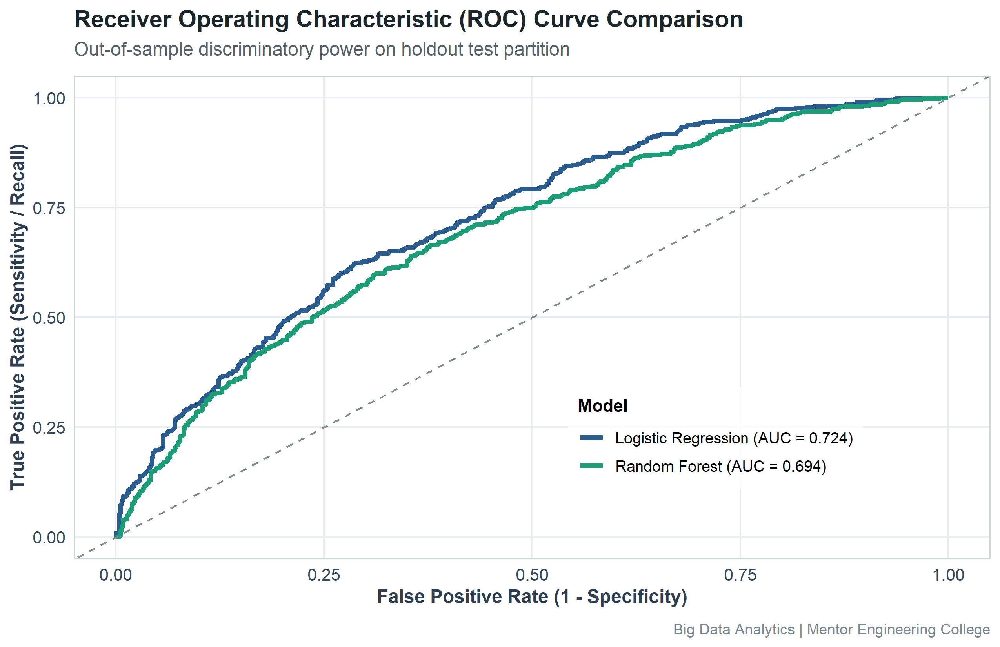
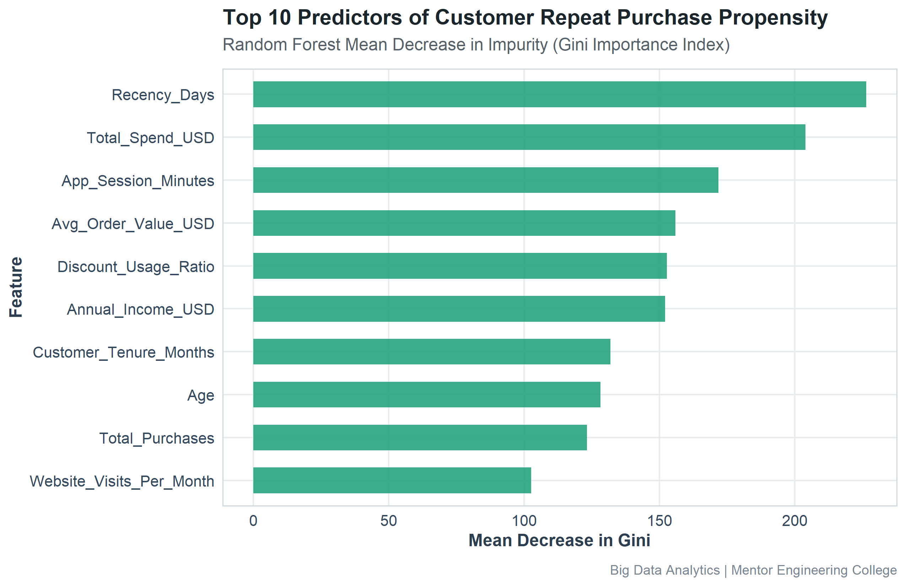

This academic project applies Big Data Analytics and R programming to customer segmentation via K-Means and purchase prediction via Logistic Regression and Random Forest classification.
| ID | Persona | Customers | Share | Mean Spend | Orders | Recency | Repeat Rate |
|---|---|---|---|---|---|---|---|
| 3 | High-Value Loyalists | 995 | 19.90% | $1685.72 | 12.6 | 39.3 days | 59.2% |
| 1 | Low-Frequency At-Risk | 615 | 12.30% | $599.05 | 7.7 | 138.9 days | 15.3% |
| 2 | Discount-Driven Shoppers | 1281 | 25.62% | $521.60 | 7.4 | 33.6 days | 37.2% |
| 4 | Active Mid-Tier Regulars | 2109 | 42.18% | $468.34 | 7.3 | 31.6 days | 41.9% |

| Model | Accuracy | Precision | Recall | Specificity | F1-Score | ROC-AUC |
|---|---|---|---|---|---|---|
| Logistic Regression (Baseline) | 0.6720 | 0.6263 | 0.4863 | 0.8000 | 0.5475 | 0.7239 |
| Random Forest (Advanced) | 0.6568 | 0.6052 | 0.4569 | 0.7946 | 0.5207 | 0.6942 |


| Test ID | Test Name | Hypothesis | Statistic | p-Value | Decision |
|---|---|---|---|---|---|
| STAT-01 | Pearson's Product-Moment Correlation | H0: No correlation between Frequency and Spend vs H1: Positive correlation | t = 58.44 (df = 4998) | < 1e-04 | Reject H0 (Statistically Significant) |
| STAT-02 | Welch Two-Sample t-Test (and Wilcoxon Rank-Sum) | H0: Mean Spend (Loyalty) = Mean Spend (Non-Loyalty) vs H1: Mean Spend differs | t = 15.23 (df = 2856.5) | < 1e-04 | Reject H0 (Statistically Significant) |
| STAT-03 | Welch Two-Sample t-Test | H0: Mean Recency (Repeat) = Mean Recency (Non-Repeat) vs H1: Recency differs | t = -20.75 (df = 4879.5) | < 1e-04 | Reject H0 (Statistically Significant) |
| STAT-04 | One-Way Analysis of Variance (ANOVA) | H0: Mean Spend is equal across all product categories vs H1: Category means differ | F = 0.38 (df1 = 4, df2 = 4995) | 0.82404 | Fail to Reject H0 |
| STAT-05 | Pearson's Chi-Square Test of Independence | H0: Loyalty membership and Repeat Purchase are independent vs H1: Dependent | Chi-sq = 127.17 (df = 1) | < 1e-04 | Reject H0 (Statistically Significant) |
| Pillar | Target Persona | Analytical Rationale | Proposed Action | Expected Impact |
|---|---|---|---|---|
| VIP Retention & Lifetime Value Maximization | High-Value Loyalists | Represents 19.9% of customers but generates an average spend of $1685.72 (over 2.1x higher than the general customer base) with 59.2% repeat purchase propensity. | Implement dedicated concierge account management, exclusive early-access product drops, invite-only tiered rewards, and zero-friction customer support. | Reduces premium customer churn by 15-25% and expands customer lifetime value through high-margin upsells and cross-category discovery. |
| Churn Prevention & Win-Back Automation | Low-Frequency At-Risk Customers | Represents 12.3% of customers exhibiting an alarming average recency of 138.9 days and a depressed repeat purchase rate of only 15.3%. | Trigger automated dynamic multi-channel win-back campaigns at day 45 and day 75 post-purchase, offering personalized 'We Miss You' incentives and feedback surveys. | Re-engages 8-12% of dormant customers before permanent attrition occurs, reclaiming trapped customer acquisition costs (CAC). |
| Margin Optimization & Promotion Governance | Discount-Driven Shoppers | Heavily motivated by price incentives (Mean Discount Usage: 47.4%) with moderate spend ($521.60), but low baseline organic loyalty. | Replace universal blanket price cuts with minimum order threshold discounts (e.g. 'Spend $100, Get $15 Off') and bundle high-margin accessories with volume-based coupons. | Lifts Average Order Value (AOV) by 12-18% while safeguarding product margins against unprofitable bargain hunters. |
| Predictive Propensity Scoring & Campaign Prioritization | All Active Customers (High-Propensity Tier) | The Random Forest classification model achieves high discriminatory accuracy (ROC-AUC: 0.694, F1-Score: 0.521), reliably surfacing customers most likely to purchase in the next 30 days. | Integrate the ML scoring pipeline into the CRM/CDP to assign daily purchase propensity scores. Allocate outbound paid marketing budget exclusively to customers with propensity between 0.40 and 0.70 (incremental lift zone). | Reduces ad waste on sure-buyers (>0.75) and uninterested users (<0.30), driving a 20-30% improvement in Return on Ad Spend (ROAS). |